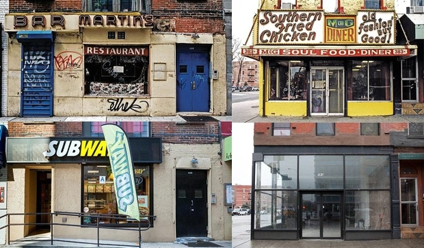

Gentrification in Williamsburg
Residents are becoming more aware of their neighborhood's situation.

Gentrification is the term for when a wealthier group of people enters a neighborhood, resulting in a raised rent for everyone in the area. By most people, it's seen as a negative aspect of urban planning because those who cannot afford the higher rent are forced to move out of their neighborhood. Old buildings or houses are renovated or sometimes broken down to create newer buildings that the wealthier class would like to live in. People living in these areas are usually paid to leave so the company can have the space. It's usually just enough to cover moving, but finding a decent place to live in this city isn't easy. Of course they can refuse, but then the management tend to make them live under bad conditions, bad enough that they would want to move out. Often times, the different classes are associated with race. The poor classes are usually minorities, such as latino or black communities, while the wealthier classes are majorities, like white people. The difference in income and race tend to cause conflicts between the two groups. The minority feels ignored and accuses the majority for their treatment, while the majority is offended at the accusation, especially because of some of the positive effects their income can bring.
Gentrification has both positive and negative effects. It can make a neighborhood safer by pushing out criminals who can no longer afford to live there, or increase the number of new businesses in the area, which helps the community as a whole. It also results in more tax revenue for the government since more people and businesses are paying taxes. This increase of taxes can lead to better public services, like renovated parks, better roads, or more funding for public schools in the neighborhood. This incoming of new families also creates diversity in a neighborhood that is mostly a single race. However, there's also the poorer families to consider. Most of the time, they cannot afford the higher rent and are forced to move out of their neighborhood. This takes a toll on the families' social and financial situation. It can even lead to homelessness, depending on how low the family's income is. Whether it's positive or negative is completely up to the individual.
Gentrification occurs because the city life is desirable for many families. When new jobs come about and housing is hard to secure, major real estate and construction companies see opportunities in these areas. Low rent is also a major factor, allowing a big profit for companies involved. Once a few new families are in the neighborhood, word spreads and the process speeds up.